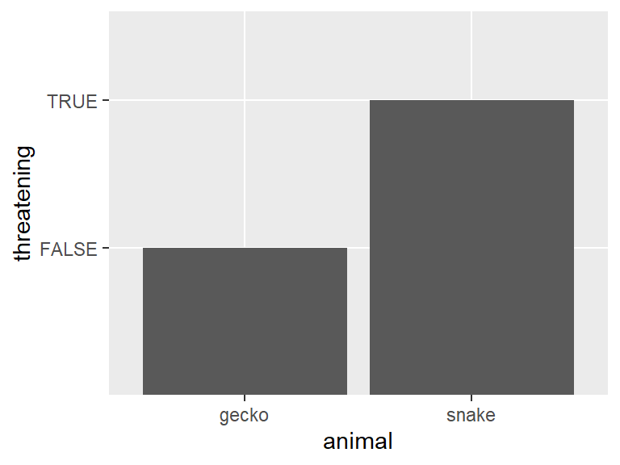

Analysis of class surveys
If you want a subtitle put it here
Use this as a template. Keep the headers and remove all other text. In all, your report can be quite short. When it is complete, render and then push changes to your team repository.
Executive summary
Write a one-paragraph abstract summarizing what you did and your findings. It need not be comprehensive; try to highlight the most important or interesting outcomes.
Data description
Write a brief description of the dataset. Your description should cover how data were obtained, sample characteristics, and measurements taken. It does not need to be exhaustive, but sufficiently detailed to convey a clear high-level understanding of the dataset. You can utilize bullet points or tables if you feel it would help improve clarity.
Questions of interest
Indicate the questions your analysis addresses. These should map one-to-one to your findings. Don’t include questions you didn’t answer or questions you started with and refined later. If you would rather frame them as goals or tasks rather than questions that is okay; just modify the header appropriately. However you frame what you’ve done, you may only have two or three items; that is fine. Provide an itemized or numbered list so that the reader can easily identify your objectives.
For example:
We sought to understand the relationship between coursework preparation, self-assessed technical abilities, and comfort level with technical skills. We also sought to understand whether the relationships differed depending on having had prior research experience. Our analysis addressed three questions:
- How should the coursework histories of students in the class be ordered from less preparation to extensive preparation?
- Is coursework preparation associated with increased self-assessed technical skill and comfort within the sample?
- Does prior research experience appear to be a substitute for coursework preparation with respect to self-assessed technical skill and comfort?
Notice that the questions are precise but not overly technical.
Findings
Summarize your results. Don’t try to explain every step you took; focus instead on providing the main data analytic outputs – tables and figures – and explaining clearly what they show. Clarify any important decisions you made in obtaining them. You can display codes if you like but it is not necessary.
Useful tips (remove this section)
Due to the visual editor, most common needs for authoring can be met using menu items in the RStudio IDE. For a comprehensive guide to Quarto, see the documentation; consult the documentation for anything you can’t sort out in the IDE.
Code chunks
Insert code chunks using the Insert drop-down menu or ctrl + alt + I . By default in this document, codes will not be shown but results will. If you want to change this behavior, add the chunk option echo: true as below.
my_df <- tibble(animal = c('snake', 'gecko'),
threatening = c(TRUE, FALSE))
my_df# A tibble: 2 × 2
animal threatening
<chr> <lgl>
1 snake TRUE
2 gecko FALSE Code chunks will be executed in order when the document is rendered, so packages should be loaded at the very beginning of the document
Rendering tables in markdown
Several functions exist for converting dataframes to markdown tables for nice display. A simple one from the knitr package is knitr::kable() .
| animal | threatening |
|---|---|
| snake | TRUE |
| gecko | FALSE |
Figures
To include any figures not generated by code chunks, use Insert > Figure / Image or  .
Most of the time code chunks producing plots will render fine. However, to adjust sizing or alignment, use the chunk options fig-width and fig-height . Captions can be added with fig-cap .

Links
To include any hyperlinks, use [display text](url) .